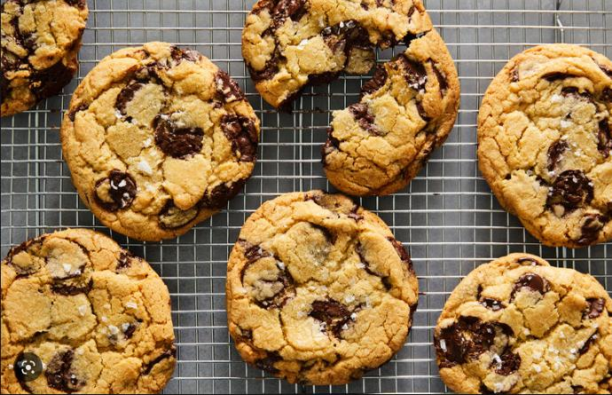

Description
Chocolate Chip Cookies.
A chocolate chip cookie is a drop cookie that features chocolate chips or chocolate morsels as its distinguishing ingredient. Chocolate chip cookies originated in the United States in 1938, when Ruth Graves Wakefield chopped up a Nestlé semi-sweet chocolate bar and added the chopped chocolate to a cookie recipe.
Ingredients
- 1 cup matzo cake meal
- ¼ teaspoon salt
- ½ cup potato starch
- 1 ¼ cups white sugar
- ½ cup margarine, softened
- 3 large eggs
- 1 (12 ounce) bag chocolate chips
- ¾ cup toasted chopped walnuts (Optional)
Steps
- Preheat the oven to 350 degrees F (175 degrees C). Line two baking sheets with parchment paper.
- Whisk matzo cake meal, potato starch, and salt together in a bowl.
- Beat sugar, margarine, and eggs together in a large bowl until smooth. Stir dry ingredients in until well combined. Stir in chocolate chips and walnuts. Drop dough by spoonfuls onto the prepared baking sheets.
- Bake in the preheated oven, switching racks halfway through, until light golden brown, 10 to 15 minutes. Remove from the oven and immediately transfer to wire racks to cool. Repeat to bake remaining cookies.